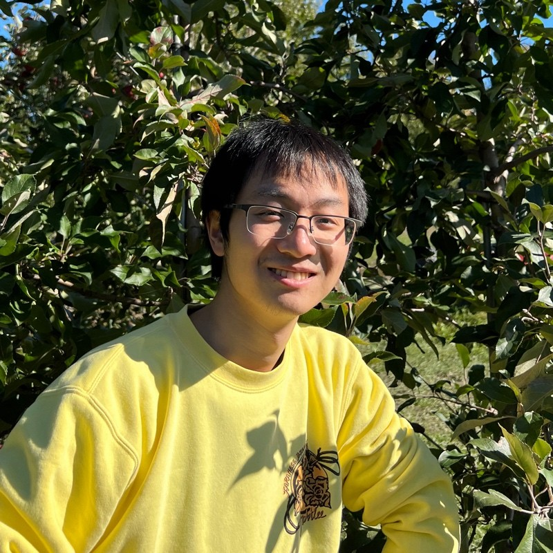

Welcome Liyuan Jin's Web Page
A tree grows over time; a program is built with each code line.
I enjoy developing programs. I plan, create, test, and deliver applications that bring convenience to modern life. To accomplish this, I focus on delivering products on time with an agile development style, building quality products, and adapting to new environments through lifelong learning.
I am enjoying the learning process to grow my professional skills and engage with people to ignite the spark of ideas. The following are my personal experiences:
-
I can deliver applications successfully with a small team and under tight schedules:
- I communicate effectively with my team to find solutions.
- I stay motivated alongside my team.
- I enjoy helping each other to move forward.
-
I educate, develop, and encourage myself to be a better person:
- I have a lifelong passion for learning new things.
- I prioritize planning before starting any project.
- I make well-informed decisions.
I enjoy meeting new people and listening to people share their work experiences. Please reach out to me if you want to talk about creating software products, artificial intelligence, IoT technology, or Formula 1 racing.
The is second box
The is third box